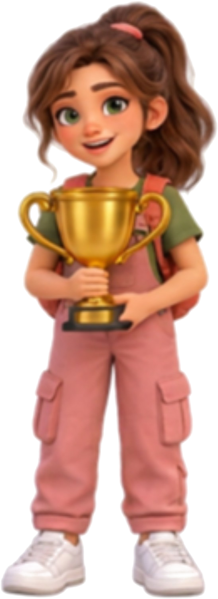

JOGO EDUCATIVO • PWA OFFLINE
Alimentação & Fertilidade
Explore cinco cenários, colete moedas e responda 30 desafios. Alimentação pode contribuir para a saúde reprodutiva, mas não garante gravidez.
🎮 Plataforma 2.5D🔊 Som♿ Acessível🪙 Moedas e pontos📴 Offline
Na capa do jogo, escolha quem vai jogar:
ESCOLHA QUEM VAI JOGAR
Maya ou Theo
Os dois aparecem no jogo, mas somente o personagem escolhido será controlado.
MAPA DA MISSÃO
5 fases • 30 perguntas
Seis desafios em cada cenário. As questões e alternativas são embaralhadas.
⭐ 0 pontos🪙 0 moedas
FaseCenário
⭐ 0🪙 0❓ 0/6
🏁FIM DA FASE
E Responder desafio

MISSÃO CONCLUÍDA
Você completou os 30 desafios!
0pontos
0moedas
0/30acertos